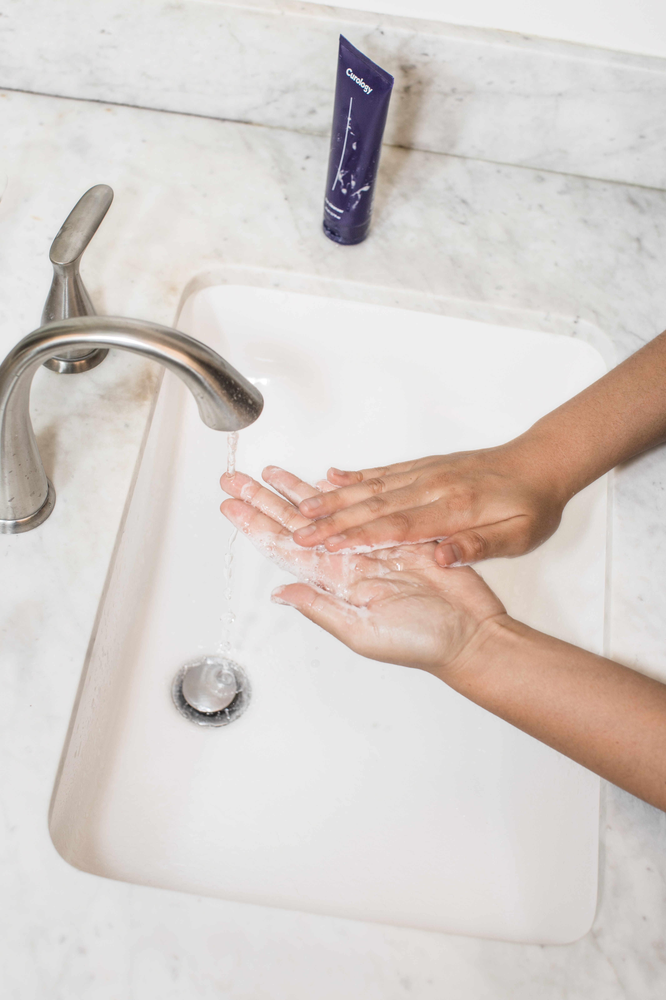

질병관리본부에 따르면 발병 진원지인 중국 우한을 방문할 경우 현지 야생동물과의 접촉을 피하는 것은 물론 감염 위험이 있는 시장과 의료기관 방문, 발열·호흡곤란 등의 증상이 있는 사람과의 접촉을 피해야 한다. 또 중국 우한을 방문한 사람은 귀국 뒤 14일 내에 관련 증상이 나타날 경우 질병관리본부 콜센터(☎1339)나 보건소로 연락해야 한다.
코로나19 감염을 예방하기 위해서는 흐르는 물에 30초 이상 손 씻기를 꼼꼼히 하고, 외출하거나 의료기관에 들를 때 마스크 착용 같은 예방 수칙을 지켜야 한다. 마스크의 경우 식품의약품안전처가 정하는 보건용 마스크를 사용하면 되는데, 식약처는 KF80(황사용)·KF94·KF99(이상 방역용) 등급으로 나눠 보건용 마스크를 관리하고 있다. 다만 숫자가 높으면 미세입자 차단 효과가 크지만, 산소투과율이 낮아 숨쉬기가 어려운 단점이 있다. 손씻기의 경우 흐르는 물에 비누로 30초 이상 손을 씻는 것이 가장 효과적이지만, 세면대가 없는 곳에서 활동할 때는 알코올 손 세정제로 수시로 씻는 것이 좋다.
